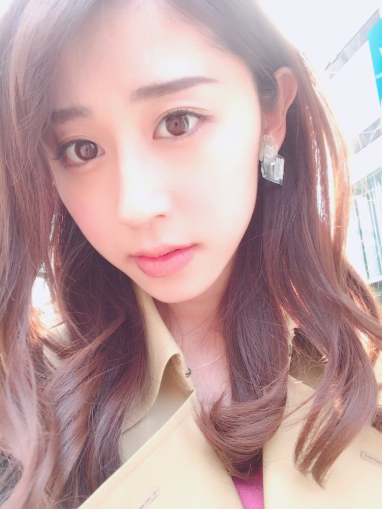

| 2017/03 28 Tue | ジーンと |
ちはるーむへようこそ
今日のちはるーむではみんなでカラオケ大会をしました。
今日はシルクロードの日。ミツバの日。
ミツバは3、2、8の語呂合わせから！
シルクロードの日というのは、
砂漠に覆わられていた
シルクロードのオアシス都市、
楼蘭という場所が探検家によって
発見された日だからです！
凄いな〜私も新しい発見をしたいな〜
ミイラとか。ピラミッドとか。\( ö )/

今日は前髪を上げてみました！
実は前髪のアイロン失敗しちゃったの(> <)笑
強風に煽られた前髪が
意外と良い感じにまとまったのでそのままにしてみました。笑
大人っぽく見えるかな？☺︎
！ChihAnswer！
 ナガくんさん
ナガくんさん
・もしほかに動物飼うなら何が良い？
→昔からお母さんと一緒に
飼いたいね〜と憧れているのは、
ハリネズミ！！
ツンツンした見た目とか
情けない表情した顔立ちとか
手足がむにょーんて出てくるところとか
可愛い要素がありすぎるヽ(；；)丿
ハリネズミのイラストやグッズも
可愛くて沢山見ちゃう〜
でも飼うの大変っていうのを聞いているので(> <)
さちゃん⊿さん
・春のオススメファッションアイテムがあったら教えて欲しいです！
→まだまだ春物に
シフトチェンジしてないので
何とも言えないけど、
可愛いな〜と思うのは
袖がフレアになったトップス！
あと春らしいカラフルな型抜きブラウス！
今流行ってるからどの雑誌でも
取り上げられていて可愛いよね〜☺︎
それにデニムを合わせたら春らしい気がする◎
あるさん
・さくらは寝言を言ったり、寝ながら走ったりしますか？
→寝ながら走ることは無いけど、
寝言はほぼ毎日言ってる！笑
ずっとく〜ん、く〜んって鳴いてるの。
可愛いよ〜☺︎
あとは寝ながら尻尾振ったりとか、
横向きに寝てたら足動かしたりとか。
ん、これは走るってことなのかな笑？
本当人間みたいだよ〜( ¨̮ )
かすかべ防衛隊いざ出陣さん
・ちーちゃんの愛犬のさくらちゃんの由来は？
→たまたまペットショップに入ったら
犬が苦手だったお母さんまでも
ピーンときた犬が、さくらだったの。
で、名前を付ける時に
どうしようかと話してたら
妹が急に「さくら」がいい！って言い出して
なんで？って理由を聞いたら、
昨日見た夢に出てきた犬が「さくら」
っていう名前だったからなんだって。
運命だったんだな〜って嬉しいんだ！
嘘みたいな話だけど本当だよ☺︎
あつみさん
・さくらちゃんは6才くらいですか？
→さくちゃんは11才のおばあちゃんだよ〜
極たまに行く散歩の時にも
あら〜赤ちゃんね〜って言われるくらいに
小さいみたいなんだけど、
こう見えておばあちゃんなの！
だから毎日毎日が大切なんだ。
みちのりさん
・歌番組以外で、出てみたい番組ややってみたい仕事ってなに？
→ミステリーハンターはもちろん、
着物や浴衣のカタログモデルに
とても興味があるし、
沈金に出た時に挑戦したお天気読みを
沢山の方に褒められて嬉しかったので
お天気キャスターのお仕事をやってみたい！
やりたい事がたくさんあるよ〜◎
今日はここまで(﹡ˆ ˆ﹡)
いつも皆さんありがとうございます！！
答えられなかった皆さんごめんなさい(> <)
また送ってください☺︎
---------------------------------------------♡
♬ ChihaMusic
「純愛ラプソディ」竹内まりやさん
お母さんがカラオケで歌っていて
この曲好き！と思って聞いたら
とっても素敵で好きになりました。
聞いていたら心が温かくなる曲。
"ドラマティックな 出来事は
起こるはずもないくらいに 平凡を生きてきた"
この部分がなんか好き。
ドラマティックとか恋の舞台とか
脇役とか主役とか。
その表現の仕方がロマンティックで可愛い。
CDショップに行ったら
乃木坂のブースが有難いことに作られていて、
その前で小学生くらいの女の子が
ヘッドフォンで曲を聴きながら
夢中になって踊りを真似していた姿を見て
胸がジーンと熱くなったよ。
嬉しかったなあ
頑張ろうと思えた。
ヽ(；；)丿ヽ(；；)丿
おやすみ
斎藤ちはる
コメント(247)
2017/03/28 23:54